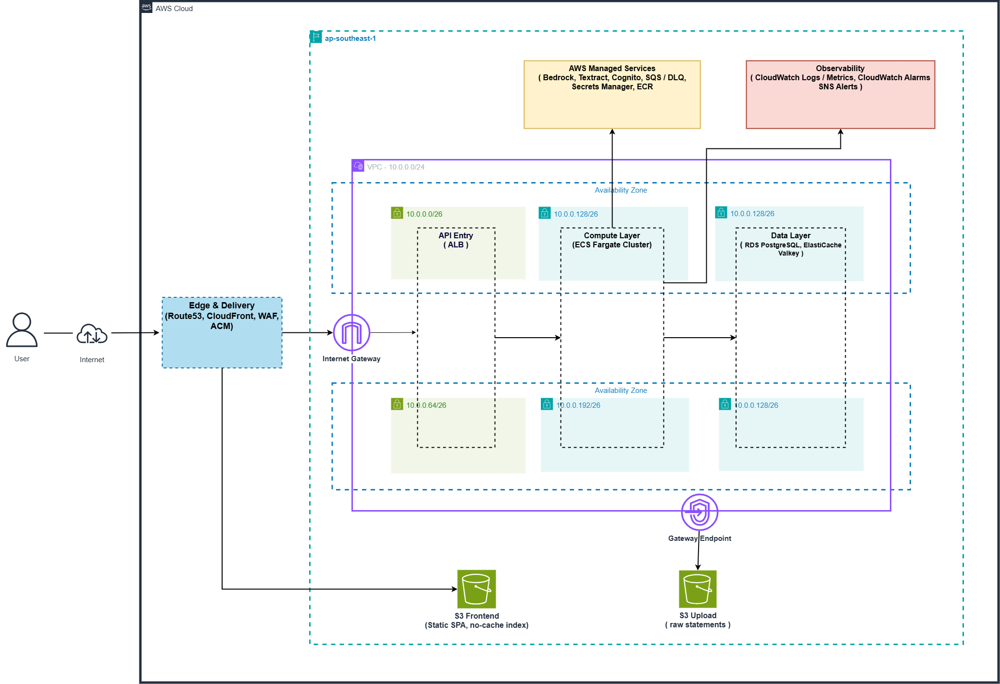
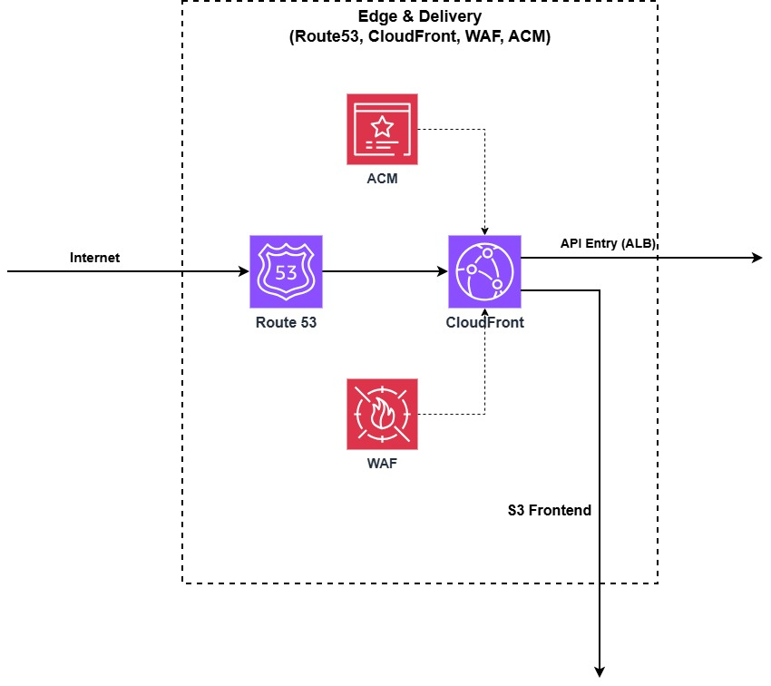
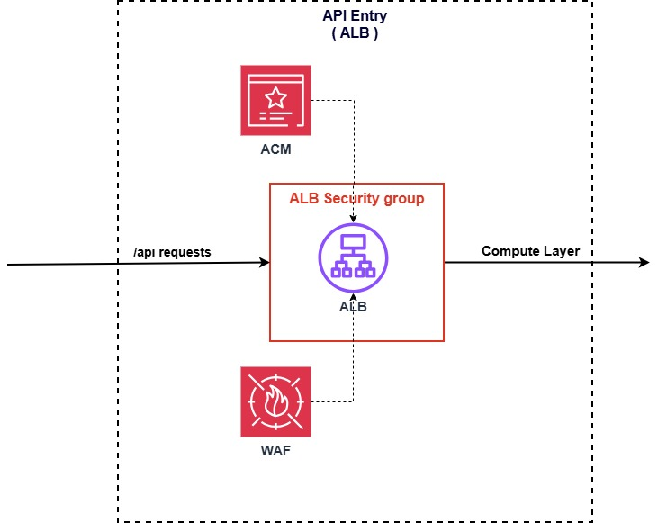
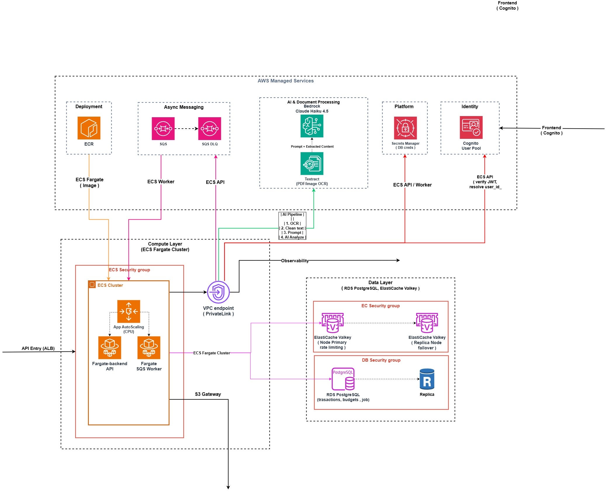
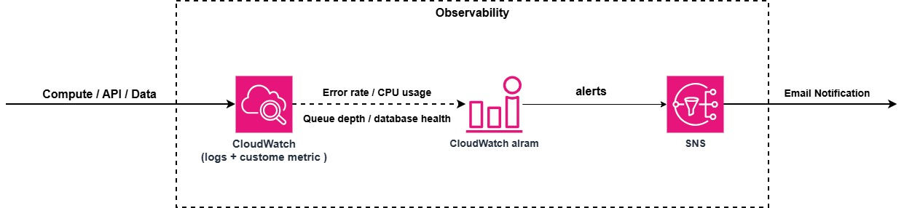

Dự án đạt giải Đề tài FinTech — Cuộc thi XBrain AWS Accelerator.
Phase 1 · Week 7 Capstone
Vì sao chọn FinTech? Dữ liệu cho thấy phần lớn người trẻ mất kiểm soát chi tiêu hàng tháng. Tại sao không khuyên dùng các app quản lý hiện có? Vì chúng bắt người dùng phải nhập tay thủ công. Chúng tôi chọn hướng đi khác: Tự động hoá 100% bằng AI.
Ghi chép tay chưa phải là thói quen mà tất cả mọi người đều có thể duy trì hàng ngày — đây là thực trạng mà phần lớn các app chi tiêu truyền thống đang bỏ qua.
Sẽ ra sao nếu có một
Kế toán AI
tự động làm hết việc đó?
Chỉ việc ném file CSV sao kê vào, không cần mapping tay phức tạp.
AI làm toàn bộ phần còn lại: Tự động phân thành 10 danh mục chuẩn.
Chat trực tiếp với AI Money Coach để được tư vấn tiêu tiền.
Biến ý tưởng của BTC thành hiện thực.
Khẳng định: Đây không phải mockup, đây là hệ thống đang chạy live.
Nhận đề bài AI Money Coach thì dễ. Nhưng làm thế nào để hệ thống chạy ổn định, chi phí rẻ, và dữ liệu trung thực trong đúng 48h thời gian đặt ra của cuộc thi?
Hạ tầng hệ thống của chúng tôi được thiết kế để chịu tải thật.

Hệ thống được chia lớp rõ ràng (Edge, API, Compute, Data) trên Public/Private Subnets, thiết kế High Availability ngay từ đầu.

CloudFront S3 cho Frontend tĩnh siêu nhanh.

ALB + WAF bảo vệ mọi traffic API.
Bài toán: Scale tĩnh cho Frontend & chống Bot. Giải pháp: Offload traffic tĩnh ra CloudFront, chốt chặn bảo mật bằng WAF trước khi chạm Backend.

Hạ tầng xịn đến đâu, nếu thuật toán sai thì Business vẫn sập. Chúng tôi scope độc lập theo user_id kết hợp sức mạnh Isolation của Cognito.

Bài toán: Backend sập hay SQS kẹt Job làm sao hay?
Giải pháp: Setup CloudWatch Metrics theo dõi Error Rate & Queue Depth -> Bắn Alarm tự động qua SNS (Email/Slack). Biết lỗi trước khi khách báo.
Đây không phải là một "vỏ" hackathon. Đây là một hệ thống Production-ready với đầy đủ CI/CD, IaC, Test coverage và Monitor.
1,674 LOC test · 78% coverage · 11 skip (cần AWS).
Cùng một bộ test chạy qua cả 5 DB adapters — interface giống nhau được chứng minh.
Lint + type-check sạch toàn repo. Comment/docstring review-friendly.
Test ép backend local (SQLite/LocalAI) — chạy offline, không chạm AWS, không tốn tiền.
Vậy trái tim của hệ thống này,
bộ não AI Money Coach,
hoạt động như thế nào?
Truy vấn tự nhiên qua Text-to-SQL kèm Guardrail nghiêm ngặt chống SQL Injection. Tối ưu chi phí: Kết hợp Keyword (miễn phí) xử lý 65% dữ liệu, chỉ dùng Claude Haiku cho 35% còn lại.
Batch 10 dòng/lần gọi · System prompt + Few-shot tách riêng để tận dụng tính năng Prompt-Cache của Bedrock, tiết kiệm tối đa token.
Cost-aware từ ngày 0 — quản trị hoàn toàn chi phí của từng model.
Công nghệ xịn là công nghệ giải quyết được vấn đề mà user không phải học cách dùng (không cần biết prompt là gì).
Federated Learning Mindset: Dữ liệu tài chính nhạy cảm tuyệt đối không rời khỏi thiết bị người dùng.
You don't need agentic AI
to build something people use.
Solve the right pain · with the right model · at the right cost.
— Group 4
Quét QR trải nghiệm repo của team. Tải source, xem Architecture Diagrams.
Stop logging expenses by hand. Let AI do it.
Mời Ban Giám Khảo và các bạn đặt câu hỏi. Đặc biệt về chi phí, bảo mật, hoặc kiến trúc AWS.